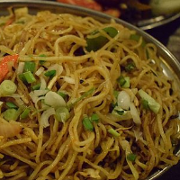
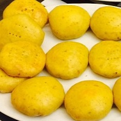
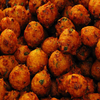

Main Dishes
Chowmein
Description.

Ingredients
1 12-oz pack chowmein noodles
1 lb seasoned ground beef (or ground turkey if you prefer)
3 scallion, finely chopped
Salt and pepper to taste
3 teaspoons molasses (substitute: 3 teaspoons dark soy sauce
1 tablespoon freshly grated ginger
2 teaspoons grated garlic
1/2 tsp Chinese 5-spice powder
3 tbsp oyster sauce
1/2 wiri-wiri pepper, chopped fine (or any hot pepper to taste; use 1pepper if you prefer this dish spicy.
2 cups of bora (substitute: string beans)
2 cups julienned carrots
Directions
Cook noodles according to directions on package.
Strain and rinse with cold water. Drizzle a little oil over noodles to prevent them from sticking. Set aside.
Heat oil in wok.
Add meat and cook until browned
Add ginger, pepper and onions and continue to cook for 1 minute
Add carrots and bora and continue to cook for 3 minutes, stirring constantly
Add molasses to mixture and mix thoroughly
Add noodles to pot and mix using a long fork.
Add chopped scallions and mix.
Enjoy
Home
Top
Channa
Description.

Top
Roti and Curry
Description.
PLACEHOLDER FOR IMAGE OF ROTI AND CURRY
Top
Finger Foods
Pholourie
Pholourie is a fried, spicy split pea snack. It should be slightly crispy on the outside and light and tender on the inside. Pre-mixed packets are available to buy and many are quite good. They're also really easy to make from scratch.

Ingredients
2 cups all-purpose flour
� Cup Split pea powder
2 teaspoons yeast
3-4 garlic cloves
2 green onion white part chopped
� wiri wiri pepper minced or hot sauce (You can use any other pepper or pepper sauce)
� teaspoon cumin spice
� teaspoon turmeric
1 teaspoon or more salt adjust to taste
2 Teaspoons sugar optional
1 1/3 cup warm water or more adjust to form a thick batter
Directions
In a mini food processor blend together cilantro, parsley, garlic, onions and scotch bonnet pepper until puree. If you do not have a processor finely chop the ingredients and smash using a motor and pestle or rolling pin. If you have green seasoning use about 2 Tablespoons instead.
In a large bowl combine all ingredients except the water ; flour split pea and all-purpose, yeast, salt sugar cumin, turmeric, curry, onion mix and yeast. Thoroughly mix.
Then add warm water a little at a time until you get to desired consistency � like thick pancake batter. I usually use about 1 1/3 cup . Thoroughly mix preferable with your hands.
Set the mixture in a warm area and let it rise and double in size -approximately 1- 2 hours
In a large, sauce pan pour vegetable oil, until it is at least 3 inches (or about 5 centimeters) high (too little will result in flatter balls), and place on medium heat until oil is about 375 degrees.
The dough is going to be slightly sticky so use your hands to grab a little bit of mixture at time and drop in the oil or use a spoon to spoon up the batter, and another spoon or spatula to drop it in the oil, sort of in the shape of a ball. Do not overcrowd the pan. Do so in batches.
Fry for a few minutes (about 7 minutes or more until the bottom side is golden brown.
Turn the ball over and fry for a few more minutes until the other side is slightly golden brown.
Use a large spoon or something like that to take it out of the oil. I usually place them on napkins right away to soak up some of the excess oil.
Top
Guyanese Beef Patties
Beef Patties are perfect for a snack, Appetizer, kids lunch bags, game nights and any occasion.

Ingredients
1 lb of ground beef
1 (8 oz) can of sweet green peas
2 beef bouillon
1 tbsp Worcestershire sauce
1 yellow onion minced finely
2 tbsp fresh chopped thyme
4-6 wiri wiri peppers or � minced habernero
3 tbsp finely minced celery leaves
2 blades of scallion minced
1 tsp allspice
1 tsp ground coriander
� tsp salt
1 tbsp vegetable oil
Egg wash(consisting of 1 egg beaten and 1 tbsp water)
Pastry Dough
3 cups of flour
1 � sticks or 12 tbsp of cold butter
1/4 cup of shortening or vegetable oil
1 tspn salt
8 tbsps of iced water
Instructions
Sift flour and salt in a large mixing bowl
Dice butter into tiny cubes and add
Add shortening or vegetable oil
Use fingertips to mix together
Add cold water one tbspn at a time
or until all dry ingredients has
been absorbed
Mold into a ball, wrap in plastic
Refrigerate for 30 minutes before
using
Method
Season meat with salt, pepper, Worcestershire sauce,
onion, allspice, wiri wiri pepper, and coriander
In a skillet, add oil and heat then add meat and bouillon
Saute on high heat or 2 minutes
Add thyme, sweet green peas, and continue to cook for 1 minute
Remove immediately in order to have a half cooked meat mixture
Bring to room temperature
Add scallions and celery leaves and incorporate using a spatula
Roll out pastry dough and cut rounds using a biscuit cutter
Fill center with approximately 1 � tbsp meat filling
Brush egg wash around the edges, top with another round of pastry dough
Press to seal edges with fingers, then use a fork to create indentations on edge
This will create a nice finish
Finally, prick the top with a fork, and baste with egg wash
Place on a greased flat sheet pan, and bake at 375 degrees for 25 minutes
Cool on a rack, but serve warm
Top
Pine Tarts
Pine Tarts are a perfectly balanced sweet pineapple filling thats tucked away in flaky shortcrust pastry .

Pineapple Filling:
1 20 oz can pineapple chunks or crushed pineapple
3/4 cup granulated sugar
1 tbsp lemon juice
pinch salt
Egg Wash:
1 egg yolk
1 tbsp water
Pastry:
4 cups flour
1 cup shortening + 1/3 cup butter
1 cup ice cold water
Makes 12 pine tarts
Directions
To make pastry, mix butter and shortening into flour using either a spoon or fork until well combined. Add ice cold water and combine until the flour forms a dough. Chill for at least half an hour.
Blend Pineapple chunks in blender with 1/2 of juice from can. If you�re using crushed pineapple then there�s no need to blend it. Mix blended pineapple, sugar, lemon juice and salt. On a medium fire, cook pineapple for 25 minutes until it has thickened. Do not overcook!! Remove from heat and cool completely before using.
Beat one egg yolk with 1 tbsp of water and set aside. Preheat oven to 375 degrees.
Roll pastry to about 1/8 of an inch thick and cut into 6 inch circles( I used a bowl). a11 Place a 1 1/2 tbsp of pineapple filling in the center of the pastry and spread, leaving 1/2 inch border. Brush the border with the egg wash. a2Fold one corner of the pastry over the filling like an envelope. a3 Fold other corner, slightly overlapping. a4Now fold the last corner of the pastry, this should enclose the filling and form a triangle. Pinch the edges close. Brush Pastry with egg wash. pinetart21Bake in a oven preheated to 375 degrees for 15-20 minutes or until golden brown. Place on a cooling rack and allow it to cool completely before serving. Enjoy!
Top
Cheese Rolls
Pastry with savory cheese filling flavored with onion and garlic .

Ingredients
2 cups flour
2/3 cup margarine
3 tbsp cold water
2 cup grated cheddar cheese
2 tsp garlic powder
2 tsp onion powder
1 tsp chili powder
1 tbsp mustard
1 egg yolk
1 tbsp water
Yields : 8 cheese rolls
Directions
To make pastry, mix margarine into flour until well combined. Add 3 tbsp of cold water and combine until the flour forms a dough. Chill for at least half an hour.
Mix cheese, garlic powder, onion powder, chili powder and mustard to make the filling. Set aside.
Roll pastry until thin..about 1/8 of an inch in thickness. Cut into 4 by 4 squares. Roll each square out just a little bit more. Divide the cheese filling evenly and spread on each square of pastry leaving a 1/2 inch border.
Mix egg with 1 tbsp of water to make an egg wash. Brush the edges of the pastry with egg wash. Take one end of the pastry and roll over filling until you reach the other end. Seal. Using a fork press both ends to seal. Place on an ungreased cookie sheet seam side down and brush with egg wash. Bake at 375 degrees for 20 mins until golden brown. Enjoy!!
Top
Potato Balls
Description.

Ingredients
1 lb potatoes, medium size
1 small onion, chopped finely
� tsp garlic powder
1 tsp cumin powder
Salt and Pepper to taste
� tsp chili powder, optional
� cup flour
Oil for deep frying
Batter
� cup dry ground yellow split peas
� tsp garlic powder
� tsp onion powder
Salt and pepper to taste
Water
Preparation
Boil the potatoes in their skins. When the skins split, remove from heat and drain.
Peel off the skin carefully. Crush the pulp until the texture is like a smooth pastry dough.
Add the seasonings, mix thoroughly and shape into balls.
Combine all the dry batter ingredients. Add just enough water to make the batter a semi-soft consistency, like thick cream.
Cooking
Roll each ball in dry flour,then dip into the prepared batter.
Heat the oil to 365�F (185�C). Deep fry the balls in the hot oil until golden brown.
Serve hot, as an appetizer or a snack. Makes 16 � 18 balls.
Top
Back